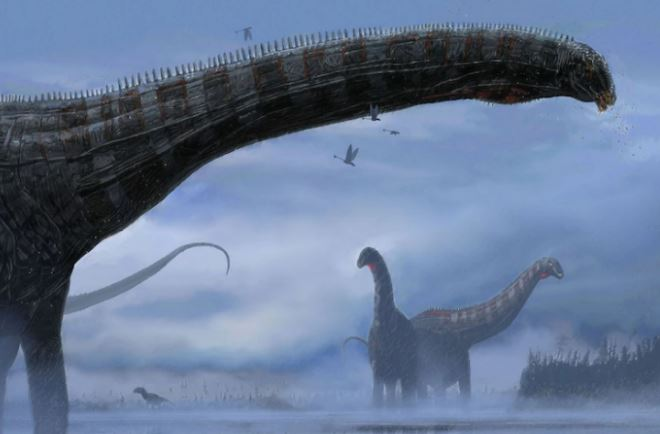
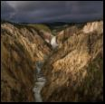
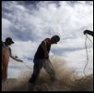

Magazine
A diver's hunt for lost slave ships led to an incredible jour...
Read
Adventure
Into the Depths: A 6-parts series featuring Nat Geo Explorer Tara Roberts
Read

Science
First dinosaur found with a respiratory disease
Read
Today's picks

Travel
150 years of Yellowstone in iconic Nat Geo image
Environment
How are winter storm watches, advisories, and warnings different?
History & culture
This 4,000-year-old skull ust received a new face
Travel
A remote village in Chine pins its hopes on the stars

Travel
Mexican cartels are increasingly moving into wildlife crime
Travel
How gig work improves livelihood prospects for millions in Southeast Asia